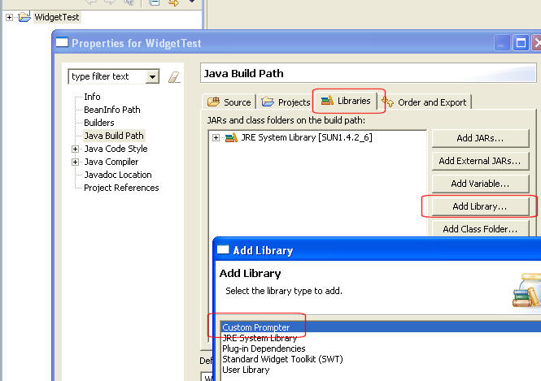
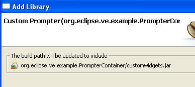
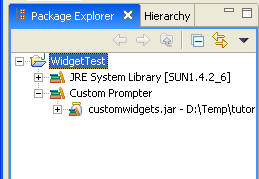
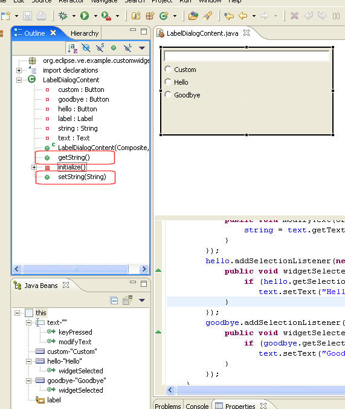
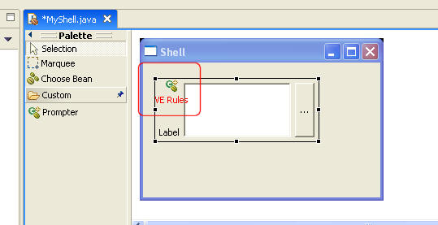
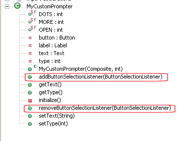

| Eclipse Article |

The Visual Editor project provides reference
implementations of a graphical user interface builder for the JFC and
SWT widget toolkits built around an extensible framework. The
motivation for this came from exerience with previous GUI builders that
while they provided high function end points for particular toolkits
were unable to be adapted to support custom behavior for areas of
functionality such as custom widgets, custom layout managers, user
specific code generation patterns, etc... A design goal of the
visual editor is that is none of its own custom behavior for any JFC or
SWT classes is done through any hard coding in the base, so any
specific logic that the VE employs to enable say a tab pane, dropping a
control on a composite, or showing feedback for a particular layout
manager is soft coded through extension points and can be leveraged by
anyone wishing to employ similar techniques.
This tutorial covers an example where a user has a
custom widget that they wish to extend the visual editor to have
specific builder behavior for.
Gili Mendel, IBM
Joe Winchester, IBM
Dave Orme, db4objects
March 16, 2005
In this tutorial a 3.1 based Eclipse plugin
org.eclipse.ve.example.customwidget will be created that
illustrates some of the basic touch points of the visual editor.
To do this an SWT custom widget will be built that combines a Label,
Text and Button in a single widget called org.eclipse.ve.examples.customwidget.MyCustomPrompter.

MyCustomPrompter has two properties: type and text. These each have get and
set methods and can be used to configure the behavior of the button and
the label's text. There is also a ButtonSelectionEvent event that is
raised when the prompter's button is pressed, and listeners can
register for this callback using addButtonSelectionListener(ButtonSelectionListener
aListener);
In the
absence of the plugin that this tutorial builds for the class MyCustomPrompter it can be used by
a user
who drops it onto an SWT composite by adding a JAR (or folder)
containing the class to their Java project's build path and using
ChooseBean from the palette to select MyCustomPrompter and drop it onto
a composite and begin working with it. Through inheritance (MyCustomPrompter extends org.eclipse.swt.widgets.Composite)
the custom control will be rendered correctly, its properties will be
determined using JavaBeansTM reflection and available to
modify using the PropertiesViewer. The event will also be
determined automatically through introspection by the Visual Editor and
available to the user to add listeners to through the Add Event
dialog. This tutorial shows how the
developer of the plugin can enable specific visual editor behavior over
and above the default that is determined through inherited behavior and
provide a high level edit experience for users of the MyCustomPrompter class. The
examples given are purely for illustrative purposes only and to
highlight some of the available ways to extend the behavior of the
Visual Editor, and it is expected that the reader of this tutorial will
use it to learn the extension mechanism and then apply this to their
own custom widget or Java class. << Disclaimer here about fitness
of the sample code required >>
| Before |
With plugin showing Custom category with the MyCustomPrompter class |
 |
 |
| Before |
With plugin |
With plugin |
| type
property displayed with default int editor |
type property displayed as static constant name | type
property edited with drop down list of enumerated
allowable values |
 |
 |
 |
| Before with default String
editor behavior for text property |
With plugin showing custom
editor for text property |
 |
 |
 and the text VE Rules over the image of the live visual
control. In addition the default behavior of a Composite
graphical edit part is to draw a border around it in the editor so that
it can be located by the user irrespective of whether it has child
controls or not. MyCustomPrompter
is an aggregate of three child controls into a custom
widget so the graphical edit part will remove the artificial border.
and the text VE Rules over the image of the live visual
control. In addition the default behavior of a Composite
graphical edit part is to draw a border around it in the editor so that
it can be located by the user irrespective of whether it has child
controls or not. MyCustomPrompter
is an aggregate of three child controls into a custom
widget so the graphical edit part will remove the artificial border.| Before with default behavior
showing the image of the live visual control with a border |
With plugin showing custom edit
part with an icon and label and no boder |
 |
 |
| Before with default code
generation behavior |
With plugin showing the extra
comment line code generated for the setText(String) method |
| private void createMyCustomPrompter()
{ myCustomPrompter = new MyCustomPrompter(sShell, SWT.NONE); myCustomPrompter.setText("Text Value"); } |
private
void createMyCustomPrompter() { myCustomPrompter = new MyCustomPrompter(sShell, SWT.NONE); myCustomPrompter.setText("Text value"); // Prompter Text Property } |
| Before where the Events menu has
no preferred events |
With plugin the Events menu has buttonSelected as a preferred event |
 |
 |
Getting Started
Creating the Plugin
The Custom Widget
Creating a Classpath Container
Adding a palette
category for our widget
Using an ENUM cell editor
Creating a SWT cell editor
Overriding a GEF edit part
Overriding an Expression
Decoder
Preferred Event
This tutorial goes go through the steps required to build a plugin
called org.eclipse.ve.example.customwidget.
The pre-requisites are an Eclipse 3.1 target environment
which has a 3.1 codebase for the Visual Editor, GEF and EMF
installed. These can be obtained from the Visual
Editor's download page.
 Although the plugin is designed to target 3.1 it can be developed in an
earlier environment such as 3.0.1. The target environment is the
one that is run when the Run ...
Eclipse Environment is used to launch a runtime
workbench. You can use Windows->Preference->PDE->Target
Platform to view and change the target environment and Help About to see the version of
Eclipse.
Although the plugin is designed to target 3.1 it can be developed in an
earlier environment such as 3.0.1. The target environment is the
one that is run when the Run ...
Eclipse Environment is used to launch a runtime
workbench. You can use Windows->Preference->PDE->Target
Platform to view and change the target environment and Help About to see the version of
Eclipse.
The completed plugin can be obtained separately as described in the
section A complete example
This section describes how to build the plugin org.eclipse.ve.example.customwidget.
This will be used to package the CustomWidget itself as well as
the include the extensions required to overide its default
behavior. The end result for users is that they will install this
plugin onto their Eclipse environment and then configure their Java
projects to use it << see
section >>.
To create the plugin select open the New Project wizard using the
menu options File > New >
Project and choose Plug-in Project. as shown in Figure 1.

On the first page of the creation wizard name the plugin org.eclipse.ve.example.customwidget,
select 3.1
as the target version and select the check box Create an OSGi bundle
manifest. Press Next
to bring up the Plug-in-Content
page and enter a plugin name such as Customwidget VE Example Plug-in in
the Plugin-In Name text
field. Press Finish to
have the PDE generate the stub plugin. The workbench might then
ask you to switch to the PDE perspective which you can answer Yes to. The plugin manifest
editor will then be opened by default. This is an editor that
allows you to view and edit the contents of the files called plugin.xml and manifest.mf that
reside within the plugin. These are both important files as they
describe the extension points used and also the list of pre-requisite
plugins.
A plugin represents a component that can be installed onto an
Eclipse environment and contributes code. Every plugin has a set
of dependent plugins which is those it requires to function. This
list would typically include pre-requisite plugins with classes or
interfaces extended or any extension points that have been used.
The list of pre-requisite plugins for a plugin extending the visual
editor is:
 The pre-requisite plugin
org.eclipse.ve.swt is not necessarily required by everyone extending
the visual editor. It contains the code that enables the visual
editor to work with the SWT and because MyCustomPrompter is an SWT custom
widget the plugin will be extending SWT base behavior. If your
plugin was for a JFC toolkit such as AWT or Swing you would not
necessarily inlude org.eclipse.ve.swt
in your list of dependencies but instead would use org.eclipse.ve.jfc. If your
plugin was for an entirely new widget toolkit you might include neither.
The pre-requisite plugin
org.eclipse.ve.swt is not necessarily required by everyone extending
the visual editor. It contains the code that enables the visual
editor to work with the SWT and because MyCustomPrompter is an SWT custom
widget the plugin will be extending SWT base behavior. If your
plugin was for a JFC toolkit such as AWT or Swing you would not
necessarily inlude org.eclipse.ve.swt
in your list of dependencies but instead would use org.eclipse.ve.jfc. If your
plugin was for an entirely new widget toolkit you might include neither.
To set up the list of required plugins select the Dependencies tab on the plugin
editor, select the Add ... button
beside the list of Required Plug-ins and enter the list of plugins
listed above.

Having create the plugin there are two major steps remaining. The first is to create the actual custom widget class itself and test it, and the second is to extend the visual editor to have the customized behavior described in the intrduction.
The custom widget used in this tutorial extends SWT composite and
has three child controls on it; a label, a text field, and a
button. For this tutorial we used the Visual Editor to build the
custom widget which, although a good exercise in using the Visual
Editor is outside the scope of what this tutorial is designed to cover,
so you download it directly from CVS. You should download the two
classes MyCustomPrompter.java,
and
ButtonSelectionListener.java
and place them into the plugin prohject in a package org.eclipse.ve.customwidget.prompter.
This is illustrated below together with the Visual Editor opened
against the MyCustomPrompter class
to show the three child controls. The package org.eclipse.ve.example.customwidget is
where the visual editor classes (such as the specialized
graphical edit part or code generation decoder) will reside, and the
package org.eclipse.ve.customwidget.prompter
is where the classes reside that the user will use to build
their runtime GUIs with.

For deployment the classes MyCustomPrompter
and ButtonSelectionListener will
be packaged in a JAR. To do this select the runtime package and
use the pop up menu option Export
to bring up the Export wizard. Select JAR file as and name the
JAR file customwidgets.jar. This
JAR file will be placed inside the plugin itself and there are two ways
to do this. The first is to either export the JAR to a temporary
location on your computer and then import it into the project. If
you do this you should import the customwidgets.jar
not as a JAR file as it contains no code of any interest to the
plugin itself, but instead as a raw File.
The reason for this is that the inclusion of the runtime code in the
plugin is not for the benefit of Eclipse and it will never be loaded by
the Visual Editor into the Eclipse JVM. The user of the plugin
will configure their Java project to use the custom prompter <<need description of this>>
and the visual editor will insert the JAR into the -classpath of the VM
that it uses to host the Java classes that make up the user's classes.
The second way to ensure that the customwidgets.jar
is included in the plugin that avoids having to export to the file
system and then re-import as a file, is to export straight to the
directory used by the plugin itself. To see the location of the
plugin you can open its properties and select Info. The figure
below shows an example of this where the workbench location is
D:\temp\tutorial and the JAR wizard creates customwidgets.jar into the
directory used by the org.eclipse.ve.example.customwidget
plugin.

In order to make the customwidgets.jar available for users on the target IDE, we are going to define a Classpath container that points to our jar. Users would then be able add this specific container to their classpath and make the MyCustomPrompter widget available for use.
To do so, we will add the following to the plugin.xml of our plugin:
<plugin>
<extension
point="org.eclipse.jdt.ui.classpathContainerPage">
<classpathContainerPage
name="Custom Prompter"
class="org.eclipse.ve.internal.java.wizard.RegisteredClasspathContainerWizardPage"
id="org.eclipse.ve.example.PrompterContainer">
</classpathContainerPage>
</extension>
<extension
point="org.eclipse.jdt.core.classpathContainerInitializer">
<classpathContainerInitializer
class="org.eclipse.ve.internal.java.core.RegisteredClasspathContainerInitializer"
id="org.eclipse.ve.example.PrompterContainer">
</classpathContainerInitializer>
</extension>
<extension
point="org.eclipse.ve.java.core.registrations">
<registration
container="org.eclipse.ve.example.PrompterContainer"
description="Custom Prompter">
<library runtime="customwidgets.jar"/>
</registration>
</extension>
</plugin>
 The jar
name registered here must be the same name/path we gave it when we
exported the .jar.
The jar
name registered here must be the same name/path we gave it when we
exported the .jar.
If you launch the workspace you will be able to see/use this container :
Launch the workspace with an Eclipse Application configuration
Create a new Java Project, and go to the the Build Path's Libraries configuration page. The Custom Prompter container should be available.

If you click Next, you should see that it is configured as following

Click Finish and OK to add the widget jar to your project.

<xmi:XMI xmi:version="2.0"
xmlns:xmi="http://www.omg.org/XMI"
xmlns:palette="http:///org/eclipse/ve/internal/cde/palette.ecore"
xmlns:utility="http:///org/eclipse/ve/internal/cde/utility.ecore">
<palette:CategoryCmp xmi:id="swtCat0">
<categoryLabel xsi:type="utility:ConstantString" string="Custom"/>
<cmpGroups xsi:type="palette:GroupCmp">
<cmpEntries xsi:type="palette:AnnotatedCreationEntry" xmi:id="entry2" icon16Name="platform:/plugin/org.eclipse.ve.example.customwidget/icons/custom.gif">
<objectCreationEntry xsi:type="palette:EMFCreationToolEntry"
creationClassURI="java:/org.eclipse.ve.example.customwidget.prompter#MyCustomPrompter"/>
<entryLabel xsi:type="utility:ConstantString" string="Prompter"/>
</cmpEntries>
</cmpGroups>
</palette:CategoryCmp>
</xmi:XMI>
What this xmi file says is that we are creating a new category (a GEF palette drawer), with a "Custom" label. This category will have a single entry with an icon, a label ("Prompter"), and a class URI for our MyCustomPrompter class.
 You will
have to add the palette's icon to your project at the path
designated above
icons/custom.gif
You will
have to add the palette's icon to your project at the path
designated above
icons/custom.gif
 XMI files
are quite verbose and easy to make syntax mistakes in. The best way to
use them, is to take one that works, and change the areas the satisfy
your needs.
XMI files
are quite verbose and easy to make syntax mistakes in. The best way to
use them, is to take one that works, and change the areas the satisfy
your needs.
Now that we have our palette xmi file available, we need to contribute it to the Visual Editor. We do so by adding to the following extension in the plugin.xml manifest:
<extension
point="org.eclipse.ve.java.core.contributors">
<palette
container="org.eclipse.ve.example.PrompterContainer"
categories="customprompter.xmi"/>
</extension>
This extension say to the Visual Editor that when the PrompterContainer is on the classpath of the project, contribute the palette noted on the xmi file.
Launch again the IDE, and create a Visual SWT Class (e.g., Shell) and look at the palette... MyCustomPrompter now be available (as you can see in the following figure):
 Make
sure to launch the workspace with the -clean option, as we have changed
the manifest file.
Make
sure to launch the workspace with the -clean option, as we have changed
the manifest file.
The MyCustomPrompter class has an int property named type
with a getType() and setType() (see the setType
method below). The setType method will only accept three
integer values, 0, 1, and 2.
If you look at the previous figure, the
Visual Editor will use (by default) an int cell editor for the
type property. We would like in this tutorial to make the Visual
Editor use an enum cell editor that will have a pull down with three
options: Dots, More, and Open.
public final static int DOTS = 0;
public final static int MORE = 1;
public final static int OPEN = 2;
:
:
public void setType (int type) {
switch (type) {
case DOTS: button.setText("...");
break;
case MORE: button.setText("More");
break;
case OPEN: button.setText("Open");
break;
default:
throw new IllegalArgumentException("Value " + type + " must be one of 0, 1 or 2");
}
}
To do so we will create a
BeanInfo
class. BeanInfo provides a generic manner to describe a JavaBean
in Java.
To denote that the type property is an enum, we used the following code
in
MyCustomPrompterBeanInfo.java
public PropertyDescriptor[] getPropertyDescriptors() {
try {
PropertyDescriptor[] result = new PropertyDescriptor[2];
result[0] = new PropertyDescriptor("text",MyCustomPrompter.class);
result[1] = new PropertyDescriptor("type",MyCustomPrompter.class);
result[1].setValue("enumerationValues", new Object[] {
"Dots", new Integer(MyCustomPrompter.DOTS), "org.eclipse.ve.example.customwidget.prompter.MyCustomPrompter.DOTS",
"More", new Integer(MyCustomPrompter.MORE), "org.eclipse.ve.example.customwidget.prompter.MyCustomPrompter.MORE",
"Open", new Integer(MyCustomPrompter.OPEN), "org.eclipse.ve.example.customwidget.prompter.MyCustomPrompter.OPEN"
});
return result;
} catch (IntrospectionException e) {
e.printStackTrace();
return null;
}
}
The BeanInfo class above overrids the getPropertyDescriptors method. It exposes two properties, text, and type. for the type property the method uses a key/value pair denoting VE enumeration values. An enumeration value is a 3-topple: label (text), value, and the code to generate for that enum. For example, the "Dots" label, will use the value of the public fields DOTS, and will generate the org.eclipse.ve.example.customwidget.prompter.MyCustomPrompter.DOTS when the Dots is selected.
 Overriding
the getPropertyDescriptors method by itself will export only
the text and type properties. We
typically need to make some of the super classes properties visible as
well (for such thing as the size, bound, focus,
font etc.). To re-export the same properties,
MyCustomPrompterBeanInfo also overrides the
getAdditionalBeanInfo method as following
Overriding
the getPropertyDescriptors method by itself will export only
the text and type properties. We
typically need to make some of the super classes properties visible as
well (for such thing as the size, bound, focus,
font etc.). To re-export the same properties,
MyCustomPrompterBeanInfo also overrides the
getAdditionalBeanInfo method as following
public BeanInfo[] getAdditionalBeanInfo() {
try{
return new BeanInfo[]{Introspector.getBeanInfo(Control.class)};
} catch (IntrospectionException e){
return new BeanInfo[0];
}
}
 Before
you re-launch your application after placing the BeanInfo in the plugin
you need to re-export the customwidgets.jar (see The Custom Widget) so that it includes
the new BeanInfo class.
Before
you re-launch your application after placing the BeanInfo in the plugin
you need to re-export the customwidgets.jar (see The Custom Widget) so that it includes
the new BeanInfo class.
 If you
are reading this before a VE1.1 release build, you may have to do a
Project->clean, close, and reopen the java project that you are
using the
MyCustomPrompter class so that the introspector clear its beaninfo
cache.
If you
are reading this before a VE1.1 release build, you may have to do a
Project->clean, close, and reopen the java project that you are
using the
MyCustomPrompter class so that the introspector clear its beaninfo
cache.
Notice the way the property sheet renders the type property with the BeanInfo comparing to the previous figure.

The MyCustomPrompter class has a String property named text. By default the Visual Editor will use a generic String cell editor for it (see Figure). But let assume that we want to develop a specialized cell editor for this property. First we are going to use the Visual Editor itself to develop the content of the cell editor (LabelDialogContent.java). We will then contribute it to VE so that it uses it as the text cell editor for a MyCustomPrompter class. The main interface fwith the LabelDialogContent class will be a simple setter/getter: getString and setString methods. The idea is that when you click on the text property on the property sheet, VE will bring up an instance of this class, call setString with the current value, and at the end call getString to get the final, edited value.

VE will require a special Cell Editor based class (we will create a CustomLabelEditor.java class). This class will wrap our GUI content class as following:
protected Object openDialogBox(Control cellEditorWindow) {
Display display = cellEditorWindow.getDisplay();
TitleAreaDialog dialog = new TitleAreaDialog(display.getActiveShell()) {
LabelDialogContent content;
protected Control createContents(Composite parent) {
Control result = super.createContents(parent);
setTitleImage(CustomwidgetPlugin.getCustomImage());
setTitle("Prompter's text property editor");
setMessage("Enter the text property, or select a default one by checking the Hello or GoodBye",IMessageProvider.INFORMATION);
return result;
}
protected Control createDialogArea(Composite parent) {
content = new LabelDialogContent(parent, SWT.NONE);
content.setString(stringValue);
return content;
}
public String toString() {
return content.getString();
}
};
if (dialog.open() != Window.CANCEL)
return createStringJavaObject(dialog.toString());
else
return getValue();
}
The openDialogBox will be called when the text property is selected in the property sheet. It in turn will open a JFace dialog with our LabelDialogContent as the createDialogArea's content. The openDialogBox needs to return the new value. This value is not a String. This value is the VE (EMF) model element representing the string value. The createStringJavaObject call will convert the string to an EMF representation of it.
 When we
prime the dialog with a stringValue, we need to figure out what
is the actual value that is represented by the (EMF) model
element. The value of the text property of a MyCustomPrompter
instance may not be the same value as was set to it in the model.
In fact, it may be the case that the text setting was never set, but it
has some default value; but what is it? To figure this out we
will have to go to the live instance of this String on the target VM
and extract its value. This logic is done with the doSetValue
method. doSetValue is called from the property sheet to prime
the cell editor with the model value. This method uses BeanProxy
APIs to refer to the actual object (on the target VM) that is referred
to by the model's value. IStringBeanProxy is the link between the
EMF String object, and the Target VM String instance.
When we
prime the dialog with a stringValue, we need to figure out what
is the actual value that is represented by the (EMF) model
element. The value of the text property of a MyCustomPrompter
instance may not be the same value as was set to it in the model.
In fact, it may be the case that the text setting was never set, but it
has some default value; but what is it? To figure this out we
will have to go to the live instance of this String on the target VM
and extract its value. This logic is done with the doSetValue
method. doSetValue is called from the property sheet to prime
the cell editor with the model value. This method uses BeanProxy
APIs to refer to the actual object (on the target VM) that is referred
to by the model's value. IStringBeanProxy is the link between the
EMF String object, and the Target VM String instance.
protected void doSetValue(Object value) {
if (value != null){
IStringBeanProxy stringBeanProxy = (IStringBeanProxy) BeanProxyUtilities.getBeanProxy((IJavaInstance) value);
stringValue = stringBeanProxy.stringValue();
}
super.doSetValue(value);
}
Now that we have the cell editor all coded up, we need to tell VE when to use it. VE uses xmi overrides files to do so. These override files (like the palette contribution) are quite verbose. Here is a portion of the MyCustomPrompter.override that relates to the cell editor. We will need to add this file to our plugin.
<?xml version="1.0" encoding="UTF-8"?>
:
:
<event:Add featureName="eStructuralFeatures">
<addedEObjects xsi:type="ecore:EReference" name="text" unsettable="true">
<eAnnotations xsi:type="org.eclipse.ve.internal.cde.decorators:BasePropertyDecorator"
cellEditorClassname="org.eclipse.ve.example.customwidget/org.eclipse.ve.example.customwidget.CustomLabelEditor"/>
</addedEObjects>
</event:Add>
</xmi:XMI>
We are telling the introspector to annotate the text feature with a BasePropertyDecorator EMF class. One of the properties of this class is a cellEditorClassname. The value format is as following: <plugin_name>/<class_name>. The Property Sheet will use this information to determine which cell editor to use. If one is not set, it will use the annotation of a super class.
Now that we have an override file will need to contribute it to VE. We will do so by adding the following extension to the plugin.xml of our plugin project:
<extension
point="org.eclipse.jem.beaninfo.registrations">
<registration
container="org.eclipse.ve.example.PrompterContainer">
<override
package="org.eclipse.ve.example.customwidget.prompter"
path="overrides/org/eclipse/ve/example/customwidget/prompter">
</override>
</registration>
</extension>
This extension tell the introspector that if the PrompterContainer is on the class path, for every class that is on the org.eclipse.ve.example.customwidget.prompter java package, use the override file that is in the overrides/org/eclipse/ve/example/customwidget/prompter directory (relative to this plugin). For a any Foo.class in this package, the introspector will look for a Foo.override xmi file in that directory and apply it if it exists.
The following is the directory structure after adding the new cell editor classes, and override file:

 Make
sure to launch the workspace with the -clean option, as we have changed
the manifest file.
Make
sure to launch the workspace with the -clean option, as we have changed
the manifest file.
 If you
are reading this before a VE1.1 release build, you may have to do a
Project->clean, close, and reopen the java project that you are
using the
MyCustomPrompter class so that the introspector clear its beaninfo
cache.
If you
are reading this before a VE1.1 release build, you may have to do a
Project->clean, close, and reopen the java project that you are
using the
MyCustomPrompter class so that the introspector clear its beaninfo
cache.
The following is the an image of the cell editor that will now come up when a user press on the ... button of the text property of a MyCustomPrompter.

Since the MyCustomPrompter is a SWT Composite, VE will use the default Composite GEF edit part. In this tutorial we are going to override the edit part that VE will use for the prompter. This edit part will not do much, but add to the prompter's image an icon, and some text on top of the screen scrape image of the prompter. The new class CustomWidgetGraphicalEditPart.java adds this logic as following:
public class CustomWidgetGraphicalEditPart extends ControlGraphicalEditPart {
protected IFigure createFigure() {
ImageFigure figure = (ImageFigure) super.createFigure();
Label customFigure = new Label("VE Rules",CustomwidgetPlugin.getCustomImage());
customFigure.setForegroundColor(ColorConstants.red);
customFigure.setTextPlacement(PositionConstants.SOUTH);
// ImageFigure has no layout, so we will have to explicitly set the size().
// To get a prefered size (before we hoop up to the hierarchy), Label will need a Font
customFigure.setFont(((GraphicalEditPart)getParent()).getFigure().getFont());
customFigure.setSize(customFigure.getPreferredSize());
figure.add(customFigure);
return figure;
}
}
The edit part extends the default Control editpart. The reason we did not extend the default composite one, is that we do not want to allow one to "drop" anything into our prompter (this widget is still a Composite). All we do here, is add a Label figure to the main (screen scraped) figure.
Now that we have a custom edit part we will tell VE to use it by updating the MyCustomPrompter.override file as following;
<event:AddMany featureName="eAnnotations">
<addedEObjects xsi:type="org.eclipse.ve.internal.cde.decorators:ClassDescriptorDecorator"
graphViewClassname="org.eclipse.ve.example.customwidget/org.eclipse.ve.example.customwidget.CustomWidgetGraphicalEditPart">
</addedEObjects>
<addedEObjects xsi:type="codeGenHelpers:CodeGenHelperClass" source="codegen.CodeGenHelperClass"
expDecoder="org.eclipse.ve.example.customwidget/org.eclipse.ve.example.customwidget.CustomPrompterDecoder"/>
</event:AddMany>
We are annotating the class itself with a ClassDescriptorDecorator. A ClassDescriptorDecorator has a graphViewClassname property. It uses the <plugin_name>/<class_name> format.
 If you
are reading this before a VE1.1 release build, you may have to do a
Project->clean, close, and reopen the java project that you are
using the
MyCustomPrompter class so that the introspector clear its beaninfo
cache.
If you
are reading this before a VE1.1 release build, you may have to do a
Project->clean, close, and reopen the java project that you are
using the
MyCustomPrompter class so that the introspector clear its beaninfo
cache.
The new edit part will render the Prompter figure with the new Label figure (text and icon) as following:

Since the MyCustomPrompter is a SWT Composite, VE will use the default Composite Decoder to handle the reverse parse, and code generation needs for the MyCustomPrompter class. For every source code (AST) expression that is modeled, VE will use an instance of an expression Decoder. The Decoder uses two helpers: a feature mapper, and a decoder helper. The feature mapper is the guy that maps a source code expression to a VE (EMF) model feature and vice versa. The decoder helper is a specific helper that knows how to reverse parse (AST) expressions into the VE model, as well as generate source code from the VE model. The role if the Decoder itself is to figure out which mapper and helper to use for a given expression.
 Decoders
to not generate AST trees because in many cases the source code is
generated from a JavaJet (JSP like) templates. These templates
can potentially be modified by users and picked up by VE on the fly.
Decoders
to not generate AST trees because in many cases the source code is
generated from a JavaJet (JSP like) templates. These templates
can potentially be modified by users and picked up by VE on the fly.
In this tutorial we will use a simple Decoder. It will add a comment when generating a setText expression (as a result of changing the text property is changed for a MyCustomPrompter instance). We will first create the CustomPrompterDecoderHelper.java helper.
public class CustomPrompterDecoderHelper extends SimpleAttributeDecoderHelper {
/* (non-Javadoc)
* @see org.eclipse.ve.internal.java.codegen.java.IExpressionDecoderHelper#generate(java.lang.Object[])
*/
public String generate(Object[] noArgs) throws CodeGenException {
String result = super.generate(noArgs);
// Add a comment at the end of the expression
int idx = result.lastIndexOf(';') + 1;
return result.substring(0, idx) + " // Prompter Text Property " + result.substring(idx, result.length());
}
}
The helper is responsible to reverse parse and generate specific source code. This helper overrides the generate method for the default helper, and adds the // Prompter Text Property comment at the end of the expression that is generated by the SimpleAttributeDecoderHelper.
We will now create a special Decoder, CustomPrompterDecoder.java. This Decoder will use the helper above when the text property is the one that the Decoder instance is responsible for:
public class CustomPrompterDecoder extends SWTControlDecoder {
protected void initialDecoderHelper() {
// if it is the text property that this decoder is decoding, use
// our special helper
if (fFeatureMapper.getFeature(null).getName().equals("text"))
fhelper = new CustomPrompterDecoderHelper(fbeanPart, fExpr, fFeatureMapper, this);
else
super.initialDecoderHelper();
}
}
The last thing that remains to do, is to use the same MyCustomPrompter.override again and add to it the following:
<event:AddMany featureName="eAnnotations">
<addedEObjects xsi:type="org.eclipse.ve.internal.cde.decorators:ClassDescriptorDecorator"
graphViewClassname="org.eclipse.ve.example.customwidget/org.eclipse.ve.example.customwidget.CustomWidgetGraphicalEditPart">
</addedEObjects>
<addedEObjects xsi:type="codeGenHelpers:CodeGenHelperClass" source="codegen.CodeGenHelperClass"
expDecoder="org.eclipse.ve.example.customwidget/org.eclipse.ve.example.customwidget.CustomPrompterDecoder"/>
</event:AddMany>
We are annotating the MyCustomPrompter class with a CodeGenHelperClass (this helper is dynamically created by EMF at this point, and hence the different syntax on it). This annotation tells VE that for a MyCustomPrompter, use the CustomPrompterDecoder class.
The MyCustomPrompter class introduces a buttonSelection event. VE will figure this out from the class file because the event follows the JavaBean specification.

As such, if you use the Visual Editor to Add Events..., the buttonSelection event will be there. In this section we will use the BeanInfo class to denote that this event is preferred. As such, this event will be available on the Events context menu:

The MyCustomPrompterBeanInfo.java also overrides the getEventSetDescriptors method, and set the preferred flag to true.
public EventSetDescriptor[] getEventSetDescriptors() {
try{
MethodDescriptor addButtonSelectionMD = new MethodDescriptor(
ButtonSelectionListener.class.getMethod("buttonSelected",
new Class[]{SelectionEvent.class})
);
addButtonSelectionMD.setPreferred(true);
addButtonSelectionMD.setValue("preferred",Boolean.TRUE);
EventSetDescriptor addButtonSelectionED = new EventSetDescriptor(
"buttonSelection",
ButtonSelectionListener.class,
new MethodDescriptor[] {addButtonSelectionMD},
MyCustomPrompter.class.getMethod("addButtonSelectionListener",new Class[]{ButtonSelectionListener.class}),
MyCustomPrompter.class.getMethod("removeButtonSelectionListener",new Class[]{ButtonSelectionListener.class})
);
addButtonSelectionED.setPreferred(true);
return new EventSetDescriptor[] {addButtonSelectionED};
} catch (Exception e){
e.printStackTrace();
}
return null;
}


Figure 2 Check Out org.eclipse.ve.example.customwidget to
install the completed example into your Eclipse workbench
In part 1 of this tutorial, we looked at a high level where to start and extend the Visual Editor and use specialized property cell editors, BeanInfo, GEF edit parts, palette, and CodeGen decoders.
IBM is trademark of International Business Machines Corporation in the United States, other countries, or both.
Java and all Java-based trademarks and logos are trademarks or registered trademarks of Sun Microsystems, Inc. in the United States, other countries, or both.
Microsoft and Windows are trademarks of Microsoft Corporation in the United States, other countries, or both.
Other company, product, and service names may be trademarks or service marks of others.